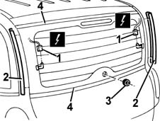
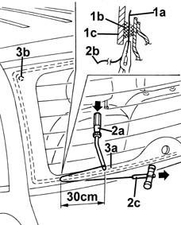
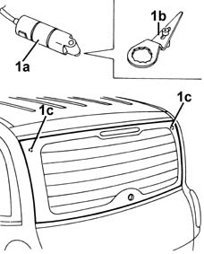
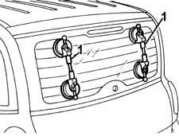
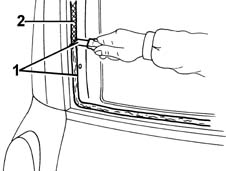
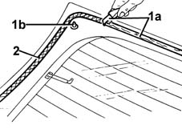
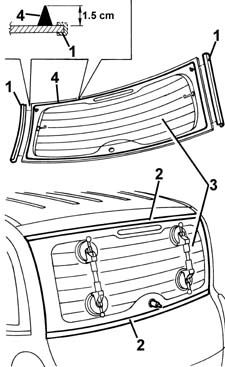
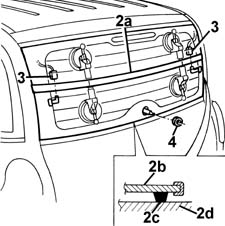

7035B12 Tailgate rearscreen (bonded type) WINDOW GLASS - R.R. - Includes. cleaning edges of glass and housing in tailgate
- Path
- Procedures > 70 FITTINGS > 7035 BODYSHELL WINDOWS > 7035B rear window > 7035B12 Tailgate rearscreen (bonded type) WINDOW GLASS - R.R. - Includes. cleaning edges of glass and housing in tailgate
- Kind
- repair procedure (removal / refitting; the operation number is the code)
- Applies to
- all engines; all production periods
- Interactive page
- https://sloeber94.github.io/elrnDB-fMltpl/en/#/2892161
Applies to: all engines; all production periods
 Removing
Removing
 Refitting
Refitting7015A04 tailgate interior panel - r+r
7015A58 internal tailgate moulding (one) - r+r
5050C42 rear wiper motor - r+r
1. Disconnect the electrical connections for the heated rear window.
Move aside the electrical connections on the rear window side so as not to damage them while cutting the bead of sealant.
 | Name | Connector |
|---|---|---|
- | Heated rear windscreen |
2. Remove the window side seals.
3. Remove the window wiper seal.
4. Apply adhesive tape to protect the top and bottom edges of the bodywork.

Applies to: all engines; all production periods
The bead of sealant on the rear window can be cut using either harmonic wire or the vibrating knife; both methods are described below.
To cut the bead using harmonic wire, proceed as described below.
1. Cut a section of harmonic wire about 50 cm long, then, using pliers, insert one end (1a) of the harmonic wire through the bead of sealant (1b) which secures the rear window (1c).
2. Secure the end (1a) of the wire to the retaining tool (2a) located inside the vehicle.
Secure the end (2b) of the wire to the traction handle (2c) located outside the vehicle.
3. The operator inside the car must keep the end of the tool (2a) on the bead of sealant (3a) at about 30 cm from the point of passage of the wire.
The other operator outside the car must pull the handle (2c), following the outline of the rear window, and cut the bead of sealant (3a).
Repeat the operation in sections of about 30 cm, until the whole of the bead of sealant (3a) is cut.
During cutting, be careful with the rear window's centring side pins (3b).

Applies to: all engines; all production periods
To cut the bead using the vibrating knife, proceed as described below.
1. Use the vibrating knife (1a), with blade (1b), and cut the bead of sealant along the entire perimeter of the rear window, working from inside the car.
During cutting, be careful with the rear window's centring pins (1c).

Applies to: all engines; all production periods
1. After cutting the whole bead of sealant, fit the suction handles on the rear window, then with the assistance of a second operator, remove the rear window and rest it on a supporting stand.

Applies to: all engines; all production periods
Refitting
Removing1. Using a suitable tool, cut and smooth off the bead of sealant in the rear window frame, so as to leave a thickness of between 0.25 and 1 mm, without scratching the paintwork. The sealant left in the frame will act as a backing for the new bond.
2. Clean the rear window seating carefully with compressed air and degrease thoroughly with heptane.
If glueing takes place 60 minutes after cutting and smoothing the bead of sealant, treat the sealant surface with the specific activator and wait 15 minutes before fixing the windscreen.
 | Type | Component | Name | Qty. |
|---|---|---|---|---|
2 | PUR activator | Rear window compartment | - | - |
Touch up the paintwork if necessary.

Applies to: all engines; all production periods
1. Using a suitable tool (1a), cut and smooth off the bead of sealant on the rear window in order to reduce the thickness to a minimum.
It is not necessary to remove the residual sealant completely; take care not to damage the black printing on the perimeter of the window.
If the centring pins (1b) break following removal, the rear window can still be reused.
2. Carefullly clean the printed area around the edge of the window with compressed air and thoroughly degrease with heptane.
Check that the window is undamaged.
If glueing takes place 60 minutes after cutting and smoothing the bead of sealant, treat the sealant surface with the specific activator and wait 15 minutes before fixing the windscreen.
| Type | Component | Name | Qty. |
|---|---|---|---|---|
2 | PUR activator | TAIL-GATE WINDOW GLASS | - | - |

Applies to: all engines; all production periods
1. Fit the side seals on the rear window.
2. Remove the adhesive tape from the edges of the bodywork, along the top and bottom perimeter of the rear window frame.
5050C42 rear wiper motor - r+r
3. Test fit the rear window and check that it is centred properly.
4. Use an air gun to extrude a bead of sealant as evenly as possible along the perimeter of the rear window.
| Type | Component | Name | Qty. |
|---|---|---|---|---|
7 | Window bonding sealant | TAIL-GATE WINDOW GLASS | Product n. 71711976 | - |

Applies to: all engines; all production periods
1. With the assistance of a second operator, fit the rear window in its seating immediately after applying the sealant and bed it in place.
2. Fit the retaining belt (2a) as shown in the figure and adjust belt tension to apply uniform pressure over the entire back window in order to ensure a correct match between window (2b), sealant (2c) and rear window frame (2d).
3. Refit and connect the rear window electrical connections.
4. Fit the window wiper seal.

Applies to: all engines; all production periods
Before refitting the car's exterior and interior components, check that there are no leaks by conducting a water test.
7015A58 internal tailgate moulding (one) - r+r
Topics linked from this page (5)
- 5050C32 rear wiper arm - r+r
- 5050C42 rear wiper motor - r+r
- 7015A04 tailgate interior panel - r+r
- 7015A58 internal tailgate moulding (one) - r+r
- P55 Heated rear windscreen